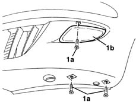

7205E10 Stripping FRONT BUMPER
- Path
- Procedures > 72 PANELS AND FRAME > 7205 STRIPPING FOR REPLACEMENT OPERATIONS > 7205E exterior parts > 7205E10 Stripping FRONT BUMPER
- Kind
- repair procedure (removal / refitting; the operation number is the code)
- Applies to
- all engines; all production periods
- Interactive page
- https://sloeber94.github.io/elrnDB-lYpsln/en/#/2429706
Applies to: all engines; all production periods
1. Working on both sides of the bumpers, undo the bolts (1a) and remove both foglamps (1b).
7055B33 protective moulding on rear bumper (1), lh or rh - r r
7055B06 grille on front bumpers r r ]
